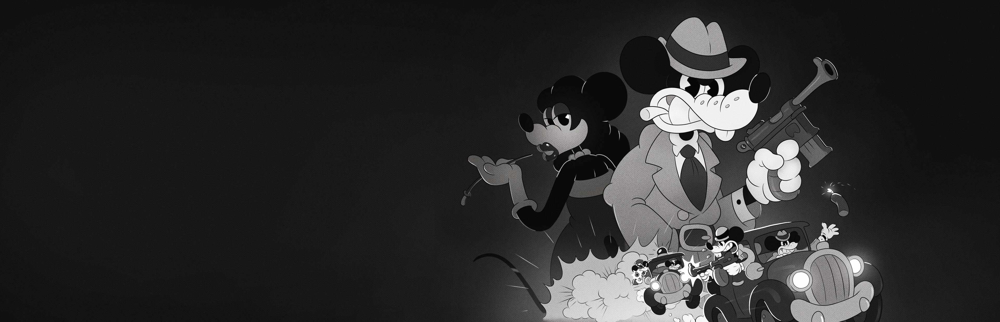

Completion
Save, back up and settings
Saved in this browser automatically. To move progress to your phone, Back up here and Restore there.

All 34 achievements, a five-run plan from a blind first playthrough to the card table, and a 100% guide for all 24 chapters: every newspaper, comic strip, baseball card, schematic, case clue and side job, with a screenshot of each spot. Progress saves in this browser.